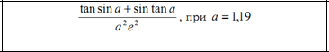

Kolachnyk Rostyslav Software Engineering 31 9variant
Завдання №1. Обчислити значення виразу

2.Визначити, чи є задане натуральне число паліндромом, тобто таким, що його десятковий запис читається однаково зліва на право і справа наліво.
3.Визначити, чи є одновимірний числовий масив упорядкованим за спаданням.
4.Надрукувати максимальні елементи стовпчиків матриці AC(5,5)..
5.Знайти різницю R=M-L, де M – сума додатних елементів масиву A(7), а L – сума додатних елементів масиву B(7).
6.Дано текст з прописними латинськими літерами, за яким йде крапка. Надрукувати літери, що йдуть в тексті до літери "f".